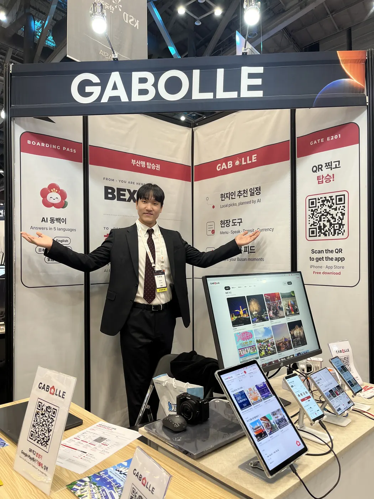
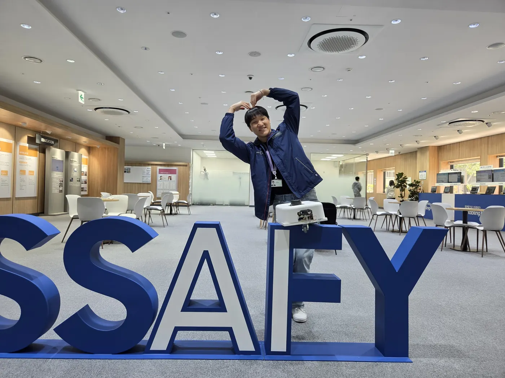
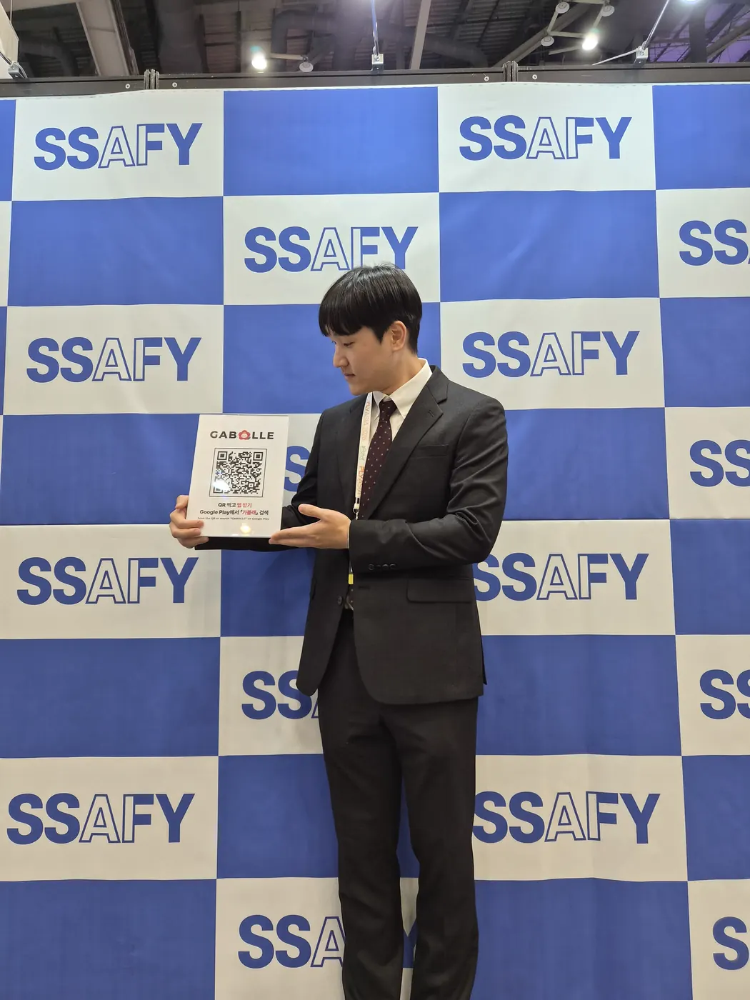

프로젝트
전체 보기

AI 활용
자세히 보기맡길 일과 판단할 일 나누기
반복 구현은 AI에 맡기고, API 계약과 보안 경계, 실패 처리는 직접 정합니다.
결과는 테스트로 확인
AI가 만든 코드는 변경 내용을 읽고, 통합·부하·동시성 테스트로 확인한 뒤 반영합니다.
작업 규칙으로 남기기
검증 원칙과 작업 순서를 스킬로 만들어 Claude Code와 Codex에서 같이 씁니다.
기술 스택
아이콘을 누르면 경험을 볼 수 있어요.
01 / 10
Spring Boot
여행 서비스의 REST API와 비동기 추천 작업 흐름을 구현했습니다.
- 인증부터 여행, 추천 작업, 기록과 공유까지 API 구현
- 요청 접수와 추천 계산을 나누고 SSE로 진행 상태 전달
02 / 10
Java
인증, 여행과 사건 처리에 필요한 서버 로직을 작성했습니다.
- GABOLLE의 사용자와 여행, 추천 작업 상태 처리
- BBIYONG의 사건 저장과 알림 재시도 처리
03 / 10
Python
모델을 학습하고 평가하며 로봇의 화재 탐지 조건을 비교했습니다.
- 화재 탐지 평가 도구, 탐지 기준과 놓친 열원을 다시 찾는 로직 개발
- ONNX 변환과 TensorRT 실행을 공동으로 진행하고 실기기 시험
04 / 10
Django
도서 추천과 창작 지원 서비스의 웹 API를 구현했습니다.
- 도서와 사용자 정보를 저장하고 조회하는 API 개발
- 별도 AI 서버와 연결해 창작 지원 기능 제공
05 / 10
FastAPI
AI 기능을 별도 서버로 나누고 웹 서버와 연결했습니다.
- Arctic의 AI 기능을 처리하는 서버 구성
- Django와 내부 HTTP 요청으로 기능 연동
06 / 10
MySQL
경보가 중복 도착해도 사건이 한 번만 저장되도록 처리했습니다.
- 경보 번호의 unique 제약으로 최종 중복 저장 방어
- 개인 로컬 동시 저장 시험에서 실제 DB 행 수 확인
07 / 10
PostgreSQL
여행과 추천 작업의 상태, 결과를 저장하고 조회했습니다.
- GABOLLE의 사용자와 여행 데이터 저장
- 작업 번호로 진행 상태와 추천 결과 조회 연결
08 / 10
Docker
서비스를 실행할 환경을 컨테이너로 구성했습니다.
- BBIYONG의 EC2 실행 환경과 Docker Compose 구성
- 서버 준비 상태를 확인하는 배포 흐름 연결
09 / 10
Jenkins
MR 검증과 개발 브랜치 병합 후 배포를 자동화했습니다.
- 임시 MySQL을 사용한 빌드와 테스트 구성
- 병합 후 변경된 파트만 배포하도록 파이프라인 분리
10 / 10
Nginx
서비스 요청을 연결하고 HTTPS 실행 환경을 구성했습니다.
- EC2의 서비스 라우팅과 HTTPS 설정
- 로봇과 서버 사이 WebSocket 연결을 위한 프록시 구성